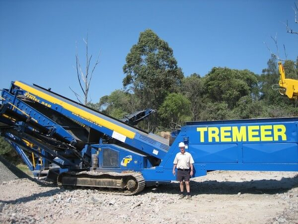

<!-- About Section -->
    <section id="about">
        <div class="container">
            <div class="row">
                <div class="col-lg-12 text-center">
                    <h2 class="section-heading">About us</h2>
                    <br>
                    <br>
                    <div class="row">
                        <div class="col-3">
                        </div>
                        <div class="col-lg-8 col-lg-offset-2 text-center">
                            <p class="large">Tremeer Excavations is a locally owned and operated family business which has been servicing South East Queensland since 1972. We’ve worked on jobs of all sizes, from suburban swimming pools to some of the biggest projects the region has seen. No matter the size of your job, you can be confident that we have the experience and expertise to get it done to the highest standard.</p>
                            <br>

                            

                            <br>
                            <br>

                            <p class="large">As one of the few contractors on the coast with as large a range of attachments, we've earned a reputation as a go-to contractor for jobs of all difficulties, from general digging, clearing and demolition to more technical jobs like constructing rock walls , augering foundations and drilling screw piers.</p>

                            <p class="large">While our workshop is based in Molendinar on the Gold Coast, we service all areas in the region, such as Brisbane, Ipswich, Tweed Heads, Sunshine Coast, Toowoomba & Darling Downs and Northern NSW. Our primary focus is providing a safe and smooth experience to our customers, and your satisfaction is our first priority.</p>
                            <br>

                            <h4 class="large">Ready to book? Call Des on <a href="tel:0408 756 386">0408 756 386</a> - or send us a quick message with what you need and where and we'll get back to you as soon as possible.</p>
                            </h4>
                        </div>
                    </div>
                </div>
            </div>
        </div>
    </section>
